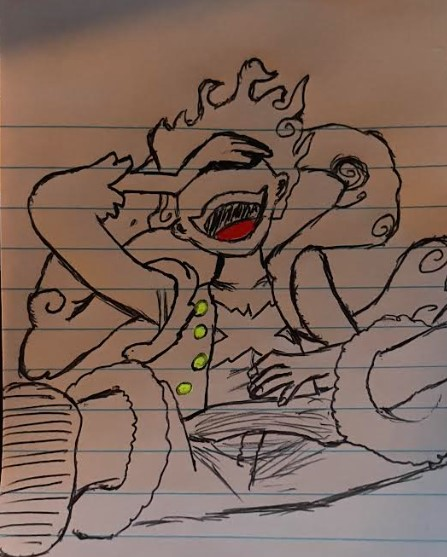
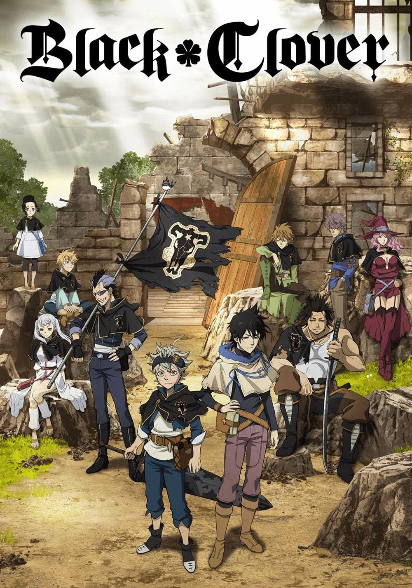

First I have my favorite anime of all, Naruto, and on the next ones I have the drawings I made
First I have my favorite anime of all, Naruto,
and on the next ones I have the drawings I made


Then here you have a coloured version, and I
think for how it ended up it was insanely good.

I feel like the colors in this one made it a lot
better, probably one of my best ones.
I really liked the idea on this one, but
unfortunately, it didn't come out as I wanted it to
the chin on the face doesn't look proportional

For this one I tried to combine different characters
it's the face of one of my favorite characters in a
really cool moment, but with the powers of the main
character. The face look too long also in this one.

This is more of a quick drawing of one of my favorite
characters, I started by doing just the eye, and
that's where my focus was, I think the eyes here are
perfect.

Probably the one I am most proud of, I had these
worn out shoes and decided to make something of them.
This is not the final result, but you can't really see all the
shoe and it's hard to catch on a picture. I have been using
these shoes for almost two year since I drew on them!

This is one of my most recent ones, I love it,
it shows two of my best characters when they were
part of the same team in the Anbu black ops.

This is the other show for which I made drawings,
love the story, but I don't believe it is quite
as good as Naruto. Even if I love both of them
really much.

First one I made on this manga I read, pretty cool
but not one of my best ones.

I think this one came out really good even
if I didn't use colors, it really pictures
the emotions the character was going through
during the moment.

Quick sketch, didn't do too much. But still
like it a lot since it was one of the best
moments in the manga.

This one was made on a request for a friend
and this is the part before using colors.
And here I added the colors, making it one
of the best ones I made. My friend LOVED it!

I have to say this one is one of the hardest
ones I have ever made, but it looks awesome!!!

This is the third longest manga I have read
I like it a lot, but I haven't made any drawings
for it.

I watched the anime for this one, and
altought it was only 24 episodes it was
a really good one.

I both watched it and read it, first I watched
and caught up with how much they made and then
I read what was left. The animations were probably
the best ones I have ever seen in any anime.

For this one I read the manga, kind of a weird
story, but good plot. I liked it but I wouldn't
say I liked it as much as others.

Read the manga, one of the ones I enjoyed the most
loved the idea and the execution, it is 200 something
chapters and I finished it in 3 days. AMAZING!!
Same as the last one, crazy good, story amazing. Same
with character development and finished this one too in
just three days. Can't wait for the anime to come out
next year.

I read the manga, and it is pretty good, it is
the continuation of my favorite anime, but I wouldn't say
it is nearly as good as Naruto. And they nerfed some of
my favorite characters from the original show, so
points off for that.

Perfect, to the very last detail of it. My second
most favorite anime I have watched. It is only 37
episodes, but the mind games between Light and L is
just top tier.

Perfect, to the very last detail of it. The story,
the world building, the character development, and
anything that happends make it one of the best ones.
Three of its episode are ranked in the top 5 episodes
in any TV show, with the other two spots taken from
Breaking Bad. (Another goated show)

Really like the story, adn a huge unexpected twist
towards the end. The concept of having a guy with no
magic in a world where your power is based on magic
and having him want to become the strongest wizard
in his kingdom is realy cool!

One of the funniest animes I have watched, the main
character is just an overpowered character who is
"Just a hero for fun" and he literally wins every fight
with just one punch. The anime towards the end gets a
little sad, but still really good. The quality of the
drawings in the manga were the best ones I have seen
54